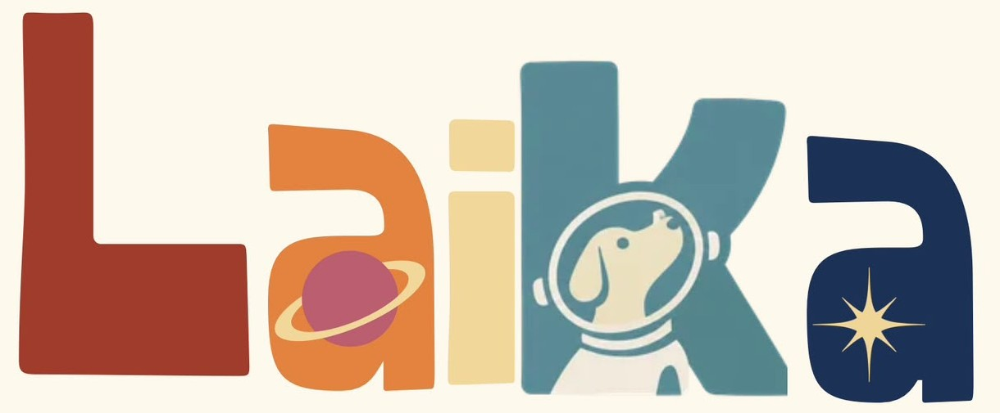
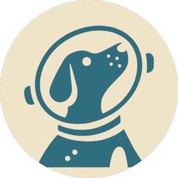

Laika Centro: punto de partida Huellas del recorridoSin conexión, la página corre en modo demo con una Laika simulada. Para datos reales, pegá la URL de tu Realtime Database de Firebase.
La pechera escribe su posición en /laika/estado y lee las órdenes en /laika/comando:
/laika/estado { "lat": 10.01631, "lon": -84.21162,
"sats": 7, "bat": 82,
"ts": {".sv": "timestamp"} }
/laika/comando { "buzzer": true,
"modo": "busqueda" | "normal",
"color": "#E07B39" }
La IdeaBoard pone buzzer en false después de sonar.